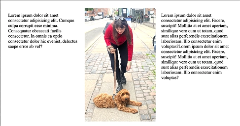
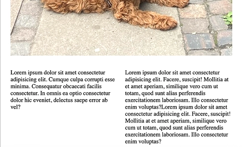
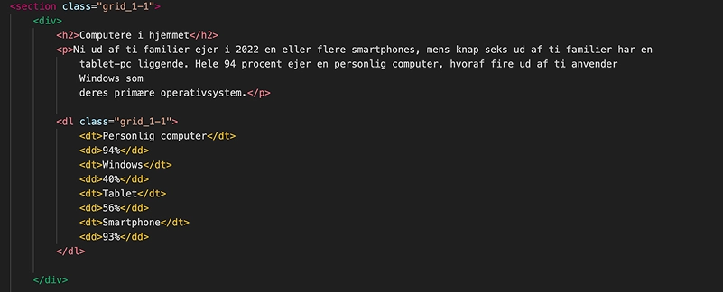
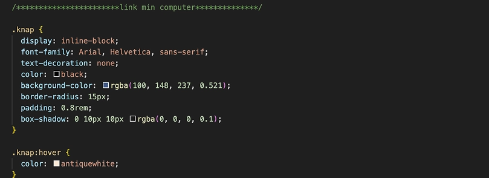
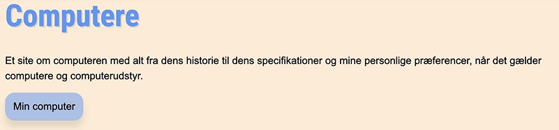
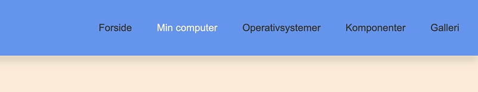
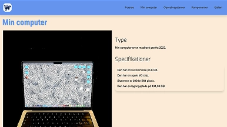
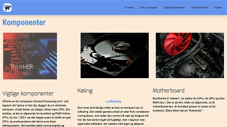
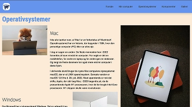
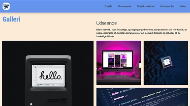

Tema 2
Grundlæggende web
Om tema 2
I tema 2 blev jeg introduceret til HTML og CSS i temaet om grundlæggende web. Jeg lærte at HTML er sproget man bruger til at lave hjemmesider med. Hvor CSS er et programmeringsprog til strukturen, der bestemmer udseendet på en hjemmeside. Derudover lærte jeg også om CSS Grids, som laver 2D-layouts i rækker og kolonner. Denne viden skulle så bruges til at lave vores første hjemmeside i form af studiestartsprøven.
 Proces
Det første der er vigtigt at tage stilling til når man skal opbygge en website, er “mobilefirst”. Det vil sige at det er vigtigt at lave en hjemmeside i mobil størrelse først, for at gøre siden responsiv. Det vil sige at siden automatisk tilpasser sig forskellige skærme. Der brugte vi grids til at ændre på elementernes placering når man skifter fra mobil størrelse til desktop. Jeg startede med nogle øvelser med grids inden jeg brugte det i opgaven. I processen lærte jeg også at bruge CSSén til at designe og lave layoutet til mit eget. Jeg lærte blandt andet at designe CTA og hover funktionen for at gøre sitet mere interaktivt.
   Kode
Da jeg skulle kode sitet, brugte jeg div´erne til at inddele elementerne, sam lavede jeg classes til elementerne så jeg kunne tale til dem. Eksempelvis når jeg skulle lave grids, skrev jeg “grid_1-1”,betyder det indholdet er i 2 kolonner og efter max-width 840px i mediaquery er indholdet i en kolonne. Jeg fandt også ud af hvordan man bruger classes, eksempelvis ved at navngive et a-tag “knap”, kan man derefter “snakke” til knappen i style.css og style det som man vil. Det er godt at kunne, da CTAérne er vigtige at få øje på for brugeren.
Hvad lærte jeg

FIGMA
HTML
GRIDS
HOVER
CSS
RESPONSIVT LAYOUT
CTA
ANALYSE AF WEBSITE
Færdige site
Studiestartsprøven, var en god måde for mig at lære hvordan en hjemmeside er bygget op, samt at lære hvordan kode “sproget” er. Det var bekræftende at se hvordan koden virkede i det visuelle billede på sitet. Opgaven var udfordrende og spændende, da det var meget nyt for mig at arbejde mere interaktivt i mit kreative arbejde.
   